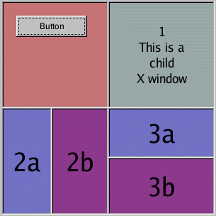

fltk::Group | +----fltk::Tile
#include <fltk/Tile.h>
fltk::Tile makes it possible for the user to dynamically drag the edges of child widgets. If two adjoining widgets are created such that their edges touch, eg. 2a and 2b, the user can drag the common edge, affecting both widgets.
In the example program, all neighboring widgets share the same edge, so that the user can drag any edge, and affect all widgets sharing that edge. All the widgets in this example have box(fltk::DOWN_BOX), and the widget's thick borders make it appear as though the widgets aren't actually touching, but they are:

fltk::Tile allows objects to be resized to zero dimensions. To prevent this you can use the resizable() to limit where corners can be dragged to.
Even though objects can be resized to zero sizes, they must initially have non-zero sizes so the fltk::Tile can figure out their layout. If desired, call position() after creating the children but before displaying the window to set the borders where you want.